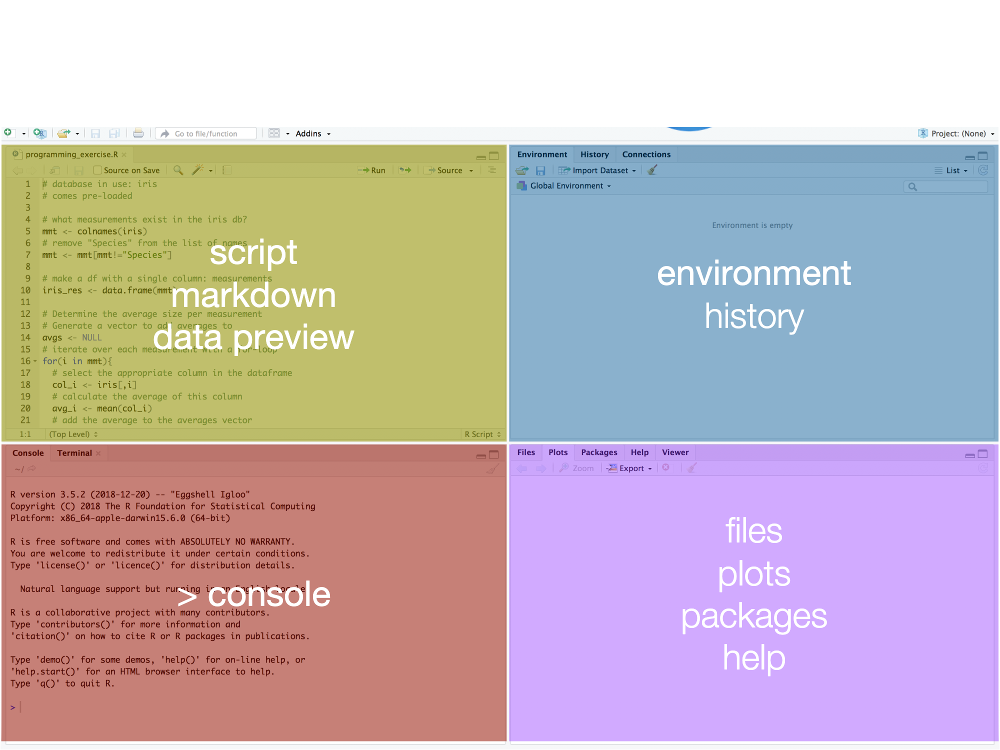
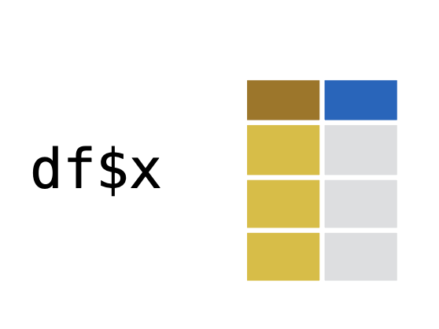
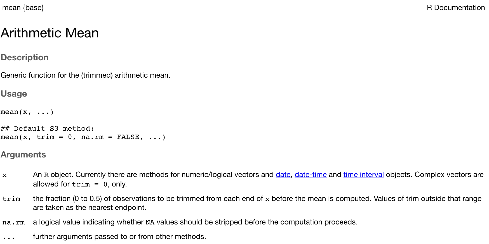
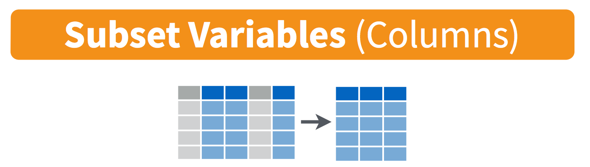
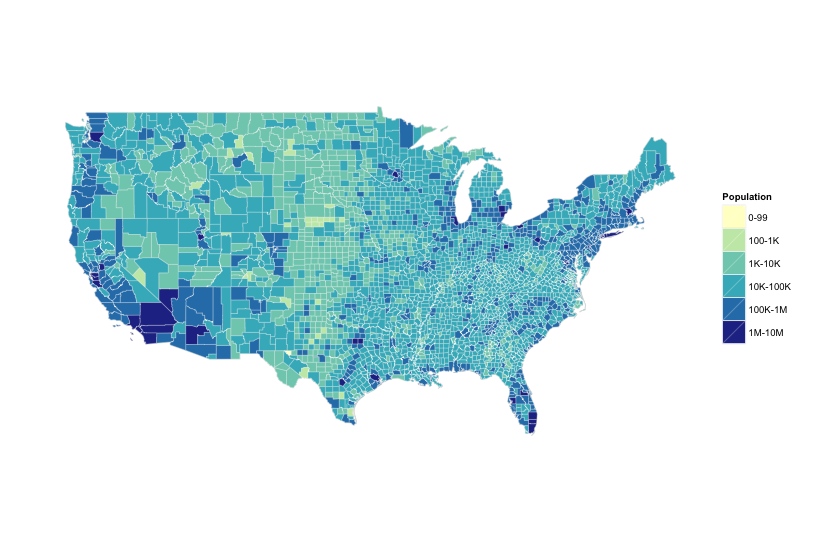
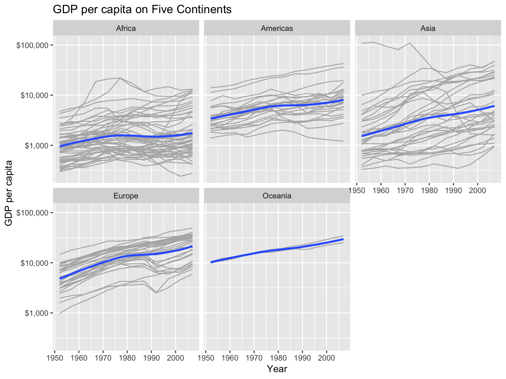

Data Skills Workshop
Matthias Haber
3-4 February 2020
Introduction
About myself
- Head of Data at Looping Studios since 2018
- Postdoc at Hertie 2015-2017 (Governance Report)
- PhD in PolSci (University of Mannheim)
- Research on parties, legislative politics, electoral behavior
- First started programming in 2011
Contact:
About yourself
- Who are you?
- Why did you take this class?
- What data/programming skills would make you work life easier?
Survey results
Survey results
Workshop structure
- Day 1
- Session 1: A basic introduction to R
- Session 2: Programming
- Session 3: Tidyverse
- Session 4: Visualization
- Day 2
- Session 1: Creating our own dataset
- Session 2: Dashboard fundamentals
- Session 3: Building our own dashboard
- Session 4: Moving deeper and further
Why data skills?
- Data skills are increasingly important for research and industry projects
- With complex data projects, however, come complex needs for understanding and communicating processes and results
The 80-20 rule
Most data are messy
- You spent most of your time cleaning/preparing data
- You learn lot about the structure of your data
R
- Based on the statistical programming language S (1976)
- R was developed by Ross Ihaka and Robert Gentleman (1995)
- R was intentionally developed to be a data analysis language
Why R
- Open source: makes it highly customizable and easily extensible
- Over 7,500 packages and counting
- Used by many social scientists interested in data analysis
- Powerful tool to generate elegant and effective plots
- Command-line interface and scripts favors reproducibility
- Excellent documentation and online help resources
We will work in RStudio
RStudio is an Integrated Developer Environment (IDE) and serves as:
Code editor
- Code highlighting/completion, indentation, …
- Feed code from editor to R-console
- Project manager
- Workspace viewer
- Data browser
- Enhanced output viewer
Help browser
Install software
R:
R packages
- tidyverse (R packages designed for data science)
Session 1: A basic introduction to R
The RStudio Interface

Basic workflow
- Edit in code editor (.r-file)
- Paste to console
- Save Workspace/Datasets (.Rdata-file)
- Save code routinely (no auto-save!)
- Press TAB to use RStudio’s autocompletion feature
Shortcuts
- Run code from editor: Select line and ctrl+Enter
- Switch between source and console: ctrl+1, ctrl+2
- Clear console: ctrl+L
- ‘Arrow up’ gives you the last line of code in the console
- Press Alt+Shift+K to see all keyboard shortcuts
Fundamentals of the R language
- Use # to comment code (will not be run)
- Case-sensitivity:
datavsData - Assigning objects: <- and =
## [1] 5## [1] "Hello World"Naming
- object names must start with a letter, and can only contain letters, numbers,
_and.. - object names should be descriptive
Each object name must be unique in an environment.
- Assigning something to an object name that is already in use will overwrite the object’s previous contents.
Functions
Functions perform operations on the input given and end in ()
R has a large collection of built-in functions that are called like this:
Functions
- For example,
seq()which makes regular sequences of numbers
## [1] 1 2 3 4 5 6 7 8 9 10Operations on scalars
You can use R as a calculator:
Functions on scalars:
## [1] 120Exercise
- Do the following calculation in R: \(\frac{1+5}{9}\)
- Assign the results to a variable
- Bonus: Round off the results to the 1 decimal
Special values in R
NA: not available, missingNULL: does not exist, is undefinedTRUE,T: logical trueFALSE,F: logical false
Finding special values
| Function | Meaning |
|---|---|
is.na |
Is the value NA |
is.null |
Is the value NULL |
isTRUE |
Is the value TRUE |
!isTRUE |
Is the value FALSE |
## [1] TRUEOperations
| Operator | Meaning |
|---|---|
< |
less than |
> |
greater than |
== |
equal to |
<= |
less than or equal to |
>= |
greater than or equal to |
!= |
not equal to |
a | b |
a or b |
a & b |
a and b |
R is object-oriented
Objects are R’s nouns and include (not exhaustive):
- character strings
- numbers
- vectors of numbers or character strings
- matrices
- data frames
- lists
Vectors
A vector is a container of objects put together in an order.
Operations on vectors
| Operation | Meaning |
|---|---|
sort(x) |
sort a vector |
sum(x) |
sum of vector elements |
mean(x) |
arithmetic mean |
median(x) |
median value |
var(x) |
variance |
sd(x) |
standard deviation |
factorial(x) |
factorial of a number |
Exercise
Create a character vector with the names of the three people sitting closest to you. Save the vector as
nameCreate a numeric vector with their respective ages and save it as
ageUse a funtion in R to calculate their average age?
Matrices
A Matrix is a square 2 dimensional container, i.e. vectors combined by row or column
Must specify number or rows and columns
matrix(x,nrow,ncol,byrow)- x: vector of length nrow*ncol
- nrow: number of rows
- ncol: number of columns
- byrow: TRUE or FALSE, specifies direction of input
Exercise
Assign a 6 x 10 matrix with the sequence 1,2,3,…,60 as the data. Save the matrix as m
Data frames
Data frames are a two-dimensional container of vectors with the same length. Each column (vector) can be of a different class and can be referenced or created with $. You can use functions like nrow(), ncol(), dim(), colnames(), or rownames() on your df.
# Combine two vectors into a data frame
number <- c(1, 2, 3, 4)
name <- c('John', 'Paul', 'George', 'Ringo')
df <- data.frame(number, name, stringsAsFactors = FALSE)
df## number name
## 1 1 John
## 2 2 Paul
## 3 3 George
## 4 4 RingoExercise
- Create a vector called
countrycontaining the names of the countries from the three people whose names you used earlier. - Create a data frame combining
name,ageandcountryand save it asmy_first_df
Lists
A list is an object containing other objects that can have different lengths and classes.
# Create a list with three objects of different lengths
list1 <- list(beatles = c('John', 'Paul', 'George', 'Ringo'),
alive = c('Paul', 'Ringo'), albums = 1:13)
list1## $beatles
## [1] "John" "Paul" "George" "Ringo"
##
## $alive
## [1] "Paul" "Ringo"
##
## $albums
## [1] 1 2 3 4 5 6 7 8 9 10 11 12 13Exercise
- Add one more person’s name to
namevector - Try to create a data frame called
my_second_dfand store the newnamevector,ageandcountryin it. See what happens and why. - Create a list instead of a data frame with the three objects and name it
my_first_list
Indexing vectors

Exercise
- Return the first number in your vector
age - Return the 2nd and 3rd element in your vector
name - Return only ages under 30 from your vector
age
Referencing matrices
- Like vectors, you can reference matrices by elements
- Can also reference rows/columns, these are vectors

Exercise
Extract the 9th column of the matrix from the previous problem. How can you find the 4th element in the 9th column?
Indexing data frames


Exercise
- From your data frame
my_first_df, return the entries for everyone living in a country of your choice.
Indexing lists
## $beatles
## [1] "John" "Paul" "George" "Ringo"## [1] "John" "Paul" "George" "Ringo"## [1] "Paul"Role of brackets
[]for indexing vectors, lists, data frames…()for passing arguments to functions{}for defining content of loops, functions, etc.
Recap types and structures
- Data types encountered so far:
logicalnumericcharacter
- Data structures
vector(1 dimension)matrix(2 dimensions)data frame(2 dimensions)list(\(n\) dimensions)
- Absent data
NA(not available)NUll(non-existent)
Recap functions
Functions encountered so far
c()data.frame()mean()- …
What if you don’t know what a functions does?
?mean()to get help for a function- help.search(‘weighted mean’) to get help for a concept
Help

Help

Break
Take a 10 minute break.
Session 2: Programming
Things we will cover in this session
- Writing scripts
- Programming with functions and loops
R’s build-in data sets
There are a number of example data sets available within R.
Iris dataset
- Standard dataset in R, measurement on three species of flowers

Exercise
- Explore the
irisdataset with the following functions:
head()tail()names()summary()dim()str()
- What do those functions tell you about the structure of
iris?
Creating an R Script

Executing an R Script
- Place the course in the line of code you want to execute
- Press “Run” or
ctrl/command + enter - You can also execute multiple lines by selecting all of them and then pressing “Run”
- Try it out! Enter in your script:
- Then execute those lines!
Functions
In R, you can write functions! They can make your code easier to understand, speed-up reoccurring tasks and help you to avoid making mistakes. However, writing good functions is a lifetime journey.
Guiding principle: Consider writing a function whenever you’ve copied and pasted a block of code more than twice.
# Find the sample mean of a vector
fun_mean <- function(x){
sum(x) / length(x)
}
data(swiss)
fun_mean(x = swiss$Infant.Mortality)## [1] 19.94255Key steps in creating functions
Pick a name for the function.
List the inputs, or arguments, to the function inside
function. A function with just one argument would look likefunction(x).Place the code you have developed in body of the function, a
{block that immediately followsfunction(...).
Always start with working code and turn it into a function; it’s harder to create a function and then try to make it work.
Exercise
Write a function that takes a number and doubles it.
Exercise solution
Write a function that takes a number and doubles it.
## [1] 16Apply function
applyallows you to apply a function to every row or every column. This can be done with afor()loop, butapply()is usually much faster and simpler.apply()takes the following form:apply(X, MARGIN, FUN, ...).
## [1] 6 7 8 9 10 11 12 13 14 15## [1] 5.5 15.5Exercise
Load up the build-in R dataset ‘iris’ and use apply() to get the mean of the first 4 variables.
Exercise (solution)
Load up the build-in R dataset ‘iris’ and use apply() to get the mean of the first 4 variables.
## Sepal.Length Sepal.Width Petal.Length Petal.Width
## 5.843333 3.057333 3.758000 1.199333Iterations
Besides functions, you can also use iterations to reduce duplication in your code by repeating the same operation on different columns, or on different datasets.
- There are two paradigms of iterations in R:
- Imperative programming
- Functional programming
For() loops
- For() loops are used to loop around a vector/matrix to do something.
## [,1] [,2] [,3] [,4] [,5]
## [1,] 1 2 3 4 5## [,1] [,2] [,3] [,4] [,5]
## [1,] 0 0 0 4 5For() loops (II)
You can also ‘nest’ a for() loop in another for() loop
## [,1] [,2] [,3] [,4] [,5]
## [1,] 0 0 0 0 13
## [2,] 0 0 0 0 14
## [3,] 3 6 9 12 15Exercise
- Run the following lines:
- Write a for loop to compute the mean of every column in the example dataset
mtcars
Exercise solution
output <- vector("double", ncol(mtcars))
names(output) <- names(mtcars)
for(i in names(mtcars)) {
output[i] <- mean(mtcars[[i]])
}
output## mpg cyl disp hp drat wt
## 20.090625 6.187500 230.721875 146.687500 3.596563 3.217250
## qsec vs am gear carb
## 17.848750 0.437500 0.406250 3.687500 2.812500If() statements
if()statements are used to make conditions on executing some code. If condition is true, action is done.
## [1] 1Tests for conditions: ==; >; <; >=; <=; !=
Packages
You can greatly expand the number of functions by installing and loading user-created packages.
You can also call a function directly from a specific package with the double colon operator (::).
Break
Enjoy your 1 hour lunch break!
Session 3: Messing with data
Things we will cover in this session
- Introduction to
Tidyverse - Loading and saving data
- Transforming data
tidyverse

Import csv files with read_csv()
You can use R’s build-in function read.csv() but I highly encourage you to use the tidyverse function read_csv() instead as it is 10x faster and can guess common formats.
## area temp size storage method texture flavor moistness
## 1 1 1 1 1 1 2.9 3.2 3.0
## 2 1 1 1 1 2 2.3 2.5 2.6
## 3 1 1 1 1 3 2.5 2.8 2.8
## 4 1 1 1 1 4 2.1 2.9 2.4
## 5 1 1 1 1 5 1.9 2.8 2.2
## 6 1 1 1 2 1 1.8 3.0 1.7Extensions
read_csv(): comma delimited filesread_csv2(): semicolon separated filesread_tsv(): tab delimited filesread_delim(): files with any delimiter
read_csv() skipping lines
You can use skip = n to skip the first n lines; or use comment = "#" to drop all lines that start with (e.g.) #:
read_csv()
read_csv() by default uses the first line of the data for the column names. You can use col_names = FALSE to not treat the first row as headings or supply your own column names with col_names:
## # A tibble: 2 x 3
## X1 X2 X3
## <int> <int> <int>
## 1 1 2 3
## 2 4 5 6## # A tibble: 2 x 3
## x y z
## <int> <int> <int>
## 1 1 2 3
## 2 4 5 6read_delim()
read_delim() is the main readr function and takes two mandatory arguments, file and delim.
Exercise
- What is wrong with each of the following inline CSV files.
Exercise solutions
Import Excel files with readxl()
The readxl package makes it easy to get data out of Excel and into R. readxl supports both .xls format and the modern xml-based .xlsx format.
You can use the excel_sheets() function to find out which sheets are available in the workbook.
## [1] "1960-1966" "1967-1974" "1975-2011"readxl
Use read_excel() to read in Excel files. You can pass a number (or string) to the sheet argument to import a specific sheet..
readxl
You can use skip to control which cells are read and col_names to set the column names.
Importing data from databases
To import data from a database you first have to create a connection to it. You need different packages depending on the database you want to connect.
dbConnect() creates a connection between your R session and a SQL database. The first argument has to be a DBIdriver object, that specifies how connections are made and how data is mapped between R and the database. If the SQL database is a remote database hosted on a server, you’ll also have to specify the following arguments in dbConnect(): dbname, host, port, user and password.
Establish a connection
List the database tables
After you’ve successfully connected to a remote database. you can use dbListTables() to see what tables the database contains:
## [1] "comments" "tweats" "users"Import data from tables
You can use the dbReadTable() function to import data from the database tables.
## id name login
## 1 1 elisabeth elismith
## 2 2 mike mikey
## 3 3 thea teatime
## 4 4 thomas tomatotom
## 5 5 oliver olivander
## 6 6 kate katebenn
## 7 7 anjali lianjaImport data from tables
Again, you can use lapply to import all tables:
Exercise
- Connect to the tweater database using the following function:
host <- "courses.csrrinzqubik.us-east-1.rds.amazonaws.com"
con <- dbConnect(RMySQL::MySQL(),
dbname = "tweater",
host = host,
port = 3306,
user = "student",
password = "datacamp")The tweats table contains a column user_id, which refer to the users that have posted the tweat. The comments table contain both a user_id and a tweat_id column.
Exercise
- Who posted the tweat on which somebody commented “awesome! thanks!” (comment 1012)?
- Be polite and disconnect from the database afterwards. You do this with the
dbDisconnect()function.
Exercise solution
The user with user_id 5: Oliver.
## [1] TRUEImport files directly from the web
You can use read_csv to directly import csv files from the web.
Download files
read_excel() does not yet support importing excel files directly from the web so you have to download the file first with download.file():
httr
The httr package provides a convenient function GET() to download files. The result is a response object, that provides easy access to the content-type and the actual content. You can extract the content from the request using the content() function
library(httr) # not part of core tidyverse
url <- "http://www.example.com/"
resp <- GET(url)
content <- content(resp, as = "raw")
head(content)## [1] 3c 21 64 6f 63 74Importing data from other statistical software
We can use haven() to read data from other statistical software packages such as SAS, STATA and SPSS.
- SAS:
read_sas() - STATA:
read_dta() - SPSS:
read_sav()orread_por(), depending on the file type.
All of these functions take the path to your local (or online) file.
Other data sources: JSON (jsonlite)
library(jsonlite) # not part of core tidyverse
url <- paste0("http://mysafeinfo.com/api/",
"data?list=englishmonarchs&format=json")
jsonData <- fromJSON(url)
str(jsonData)## 'data.frame': 5 obs. of 5 variables:
## $ ID : int 1 2 3 4 5
## $ Name : chr "Edward the Elder" "Athelstan" "Edmund" "Edred" ...
## $ Country: chr "United Kingdom" "United Kingdom" "United Kingdom" "United Kingdom" ...
## $ House : chr "House of Wessex" "House of Wessex" "House of Wessex" "House of Wessex" ...
## $ Reign : chr "899-925" "925-940" "940-946" "946-955" ...Other data sources: Images
Other data sources: Geospatial data
Other data sources: Music data
- tuneR - http://cran.r-project.org/web/packages/tuneR/
- seewave - http://rug.mnhn.fr/seewave/
Data manipulation with dplyr

Piping
The pipe operator %>% (Ctrl/Cmd+Shift+M) allows you to write code in sequences which has several benefits:
- serves the natural way of reading (“First this, then this, …”)
- avoids nested function calls
- minimizes the need for local variables and function definitions
Core dplyr() functions
filter(): select rows by their valuesarrange(): order rowsselect(): select columns by their namesmutate(): create new variablessummarize(): collapse many values down to a single summarygroup_by(): operate on it group-by-grouprename(): rename columnsdistinct(): find distinct rows
Command structure (for all dplyr verbs):
- first argument is a data frame
- return value is a data frame
- nothing is modified in place
filter()
filter() allows to subset observations based on their values. The function takes logical expressions and returns the rows for which all are TRUE.

filter()
filter() revolves around using comparison operators: >, >=, <, <=, != (not equal), and == (equal).
dplyr functions like filter() never modify inputs but instead return a new data frame that needs to be assigned to an object if you want to save the result.
Boolean operators
filter()also supports the Boolean operators&(“and”)|(“or”)!(is “not”)xor(exclusive “or”)

Boolean operators
Generally a good idea to use x %in% y, which will select every row where x is part of the values of y.
between condition
Another useful dplyr filtering helper is between(). between(x, left, right) is equivalent to x >= left & x <= right.
filter() exercise
- Install and load the package
nycflights13
2.Find all flights that
a. Had an arrival delay of two or more hours.
b. Arrived more than two hours late, but didn't leave late.
c. Flew to Houston (`IAH` or `HOU`).
d. Were operated by United, American, or Delta.
e. Departed in summer (July, August, and September).filter() exercise solutions
Arrival delay of two or more hours
Arrived more than two hours late, but didn’t leave late
Flew to Houston (IAH or HOU)
filter() exercises solutions
Were operated by United, American, or Delta
Departed in summer (July, August, and September)
arrange()
arrange() takes a data frame and a set of column names to order the rows by. Multiple column names are evaluated subsequently.
| year | month | day | dep_time | sched_dep_time | dep_delay |
|---|---|---|---|---|---|
| 2013 | 1 | 1 | 517 | 515 | 2 |
| 2013 | 1 | 1 | 533 | 529 | 4 |
| 2013 | 1 | 1 | 542 | 540 | 2 |
| 2013 | 1 | 1 | 544 | 545 | -1 |
| 2013 | 1 | 1 | 554 | 600 | -6 |
| 2013 | 1 | 1 | 554 | 558 | -4 |
arrange() in descending order
By dafault arrange() sorts values in ascending order. Use desc() to re-order by a column in descending order.
| year | month | day | dep_time | sched_dep_time | dep_delay |
|---|---|---|---|---|---|
| 2013 | 1 | 9 | 641 | 900 | 1301 |
| 2013 | 6 | 15 | 1432 | 1935 | 1137 |
| 2013 | 1 | 10 | 1121 | 1635 | 1126 |
| 2013 | 9 | 20 | 1139 | 1845 | 1014 |
| 2013 | 7 | 22 | 845 | 1600 | 1005 |
| 2013 | 4 | 10 | 1100 | 1900 | 960 |
select()
select() is used to select a subset of variables from a dataset.

select() Example
| year | month | day |
|---|---|---|
| 2013 | 1 | 1 |
| 2013 | 1 | 1 |
| 2013 | 1 | 1 |
| 2013 | 1 | 1 |
select()
select() has various helper functions:
everything(): selects all variables.starts_with("abc"): matches names beginning with “abc”.ends_with("xyz"): matches names that end with “xyz”.contains("ijk"): matches names that contain “ijk”.matches("(.)\\1"): selects variables that match a regular expression.num_range("x", 1:3)matchesx1,x2andx3.
See ?select for more details.
mutate()
mutate() allows to add new columns to the end of your dataset that are functions of existing columns.

mutate()
flights %>%
select(ends_with("delay"), distance, air_time) %>%
mutate(gain = arr_delay - dep_delay,
speed = distance / air_time * 60
)| dep_delay | arr_delay | distance | air_time | gain | speed |
|---|---|---|---|---|---|
| 2 | 11 | 1400 | 227 | 9 | 370.0441 |
| 4 | 20 | 1416 | 227 | 16 | 374.2731 |
| 2 | 33 | 1089 | 160 | 31 | 408.3750 |
| -1 | -18 | 1576 | 183 | -17 | 516.7213 |
| -6 | -25 | 762 | 116 | -19 | 394.1379 |
| -4 | 12 | 719 | 150 | 16 | 287.6000 |
Functions to use with mutate()
There are many functions for creating new variables with mutate():
- Arithmetic operators:
+,-,*,/,^(e.g.air_time / 60). - Aggregate functions:
sum(x)mean(y)(e.g.mean(dep_delay)). - Logical comparisons,
<,<=,>,>=,!=. - Ranking:
min_rank(),row_number(),dense_rank(),percent_rank(),cume_dist(),ntile(). - …
mutate() exercises
Use
mutate()andmin_rankto create a new variabledep_delay_rankthat ranks all flights by their departure delay.Find the 10 most delayed flights?
mutate() exercise solutions
summarize()
summarize() collapses a data frame to a single row.
## # A tibble: 1 x 1
## delay
## <dbl>
## 1 12.6summarize() with group_by()
summarize() is most effectively used with group_by(), which changes the unit of analysis from the complete dataset to individual groups.

Grouping is most useful in conjunction with summarise(), but you can also do convenient operations with mutate() and filter().
summarize() with group_by()
For example, to get the average delay per date
summarize() count
For aggregations it is generally a good idea to include a count n(). For example, let’s look at the (not cancelled) planes that have the highest average delays:
summarize() useful functions
There are a number of useful summary functions:
- Measures of location:
mean(x),sum(x),median(x). - Measures of spread:
sd(x),IQR(x),mad(x). - Measures of rank:
min(x),quantile(x, 0.25),max(x). - Measures of position:
first(x),nth(x, 2),last(x). - Counts:
n(),sum(!is.na(x)),n_distinct(x). - Counts and proportions of logical values:
sum(x > 10),mean(y == 0).
summarize() exercises
- Use
summarize()to find the carrier with the worst delays.
summarize() exercises solutions
Number of cancelled flights per day
Tidy data with tidyR

Tidy data
In tidy data:
- Each variable forms a column
- Each observation forms a row
- Each type of observational unit forms a table

- Any dataset that doesn’t satisfy these conditions is considered ‘messy’
gather() and spread()
- The two most important functions in
tidyraregather()andspread(). tidyrbuilds on the idea of a key value pair. A key that explains what the information describes, and a value that contains the actual information (e.g. Password: 0123456789).gather()makes wide tables narrower and longer;spread()makes long tables shorter and wider.
gather()
Problem: Column names are not names of a variable, but values
Goal: Gather the non-variable volumns into a two-column key-value pair
gather()
Three parameters:
Set of columns that represent values, not variables
The name of the variable whose values form the column names
key.The name of the variable whose values are spread over the cells
value.
gather()
## Species obs measurement value
## 1 setosa 1 Sepal.Length 5.1
## 2 setosa 2 Sepal.Length 4.9
## 3 setosa 3 Sepal.Length 4.7
## 4 setosa 4 Sepal.Length 4.6
## 5 setosa 5 Sepal.Length 5.0
## 6 setosa 6 Sepal.Length 5.4spread()
Spreading is the opposite of gathering. You use it when an observation is scattered across multiple rows.
spread()turns a pair of key:value columns into a set of tidy columns.- We only need two parameters:
- The column that contains variable names, the
keycolumn. - The column that contains values forms multiple variables, the
valuecolumn.
- The column that contains variable names, the

spread()
iris %>%
mutate(obs = 1:n()) %>%
gather(measurement, value, Sepal.Length:Petal.Width) %>%
tidyr::spread(key = measurement, value = value) %>%
head()## Species obs Petal.Length Petal.Width Sepal.Length Sepal.Width
## 1 setosa 1 1.4 0.2 5.1 3.5
## 2 setosa 2 1.4 0.2 4.9 3.0
## 3 setosa 3 1.3 0.2 4.7 3.2
## 4 setosa 4 1.5 0.2 4.6 3.1
## 5 setosa 5 1.4 0.2 5.0 3.6
## 6 setosa 6 1.7 0.4 5.4 3.9Further functions: separate()
separate() pulls apart one column into multiple columns, by splitting wherever a separator character appears. separate() takes the name of the column to separate, and the names of the columns to separate into.

Further functions: unite()
unite() is the inverse of separate(): it combines multiple columns into a single column. You’ll need it much less frequently than separate(), but it’s still a useful tool to have in your back pocket.
Exercise
Tidy the simple tibble below. Do you need to make it wider or longer? What are the variables?
## # A tibble: 2 x 3
## pregnant male female
## <chr> <dbl> <dbl>
## 1 yes NA 10
## 2 no 20 12Break
Take a 10 minute break.
Session 4: Visualizations
Why Visualization is Important
“At their best, graphics are instruments for reasoning about quantitative information.” Tufte (1983)
“There is no statistical tool that is as powerful as a well-chosen graph.” Chambers et al. (1983)
“Graphics should report the results of careful data analysis—rather than be an attempt to replace it.” Tukey (1993)
Goals
Discovery goals:
- Giving an overview—a qualitative sense of what is in a dataset
- Conveying the sense of the scale and complexity of a dataset
Communication goals:
- Communication to self and others: Displaying information from the dataset in a readily understandable way
- Telling a story
- Attracting attention and stimulating interest
Interpreting a graph depends on expectations
- If readers have a lot of background knowledge, they will view the graphic differently don’t assume you already have the reader’s interest and involvement
- Making graphics attractive can help motivate readers to understand them
Graphics are part of a story
- A graphic does not live on its own
- There can be annotations, a legend, a title, a caption, accompanying text, an overall story, and a headline
Seven Rules for Better Figures (Rougier et al. 2014)
Know your audience
- Who is the figure for?
Identify your message
- What is the role of the figure?
Captions are not optional
- Always use captions, explaining how to read a figure
Use color effectively
- Color can be your greatest ally or your worst enemy (Tufte 1983)
Seven Rules for Better Figures (Rougier et al. 2014)
Do not mislead the reader
- A scientific figure is tied to the data
Avoid chartjunk
- Get rid of any unnecessary non-data-ink
Get the right tool
- Use R!
ggplot2
R has several systems for making graphs, but ggplot2 is one of the most elegant and most versatile. ggplot2 implements the grammar of graphics, a coherent system for describing and building graphs.
ggplot2 examples

ggplot2 examples

ggplot2 examples

ggplot2 examples

The grammar of graphics
- Each plot is made of layers. Layers include the coordinate system (x-y), points, labels, etc.
- Each layer has aesthetics (
aes) including x & y, size, shape, and color. - The main layer types are called geometrics(
geom) and include lines, points, etc.
The grammar of graphics
A ggplot is build piece by piece

The grammar of graphics

The grammar of graphics

ggplot workflow
Tell the
ggplot()function what your data are.Tell
ggplotwhat relationships we want to see.Tell
ggplothow you want to see the relationships in your data.Add additional layers to the p object one at a time.
Use additional functions to adjust scales, labels, tick marks.
Components of a ggplot2 graph
- data: Variables mapped to aesthetic attributes
- aesthetic: Visual property of the plot objects
- geom: Geometrical object used to represent data
- stats: Statistical transformations of the data
- scales: Values mapped to aesthetic attributes
- coord: Coordinate system
- facets: Subplots that each display one subset of the data
Tidy data
ggplot requires data to be tidy, with observations in rows and variables grouped in key | value columns.
| Person | treatmentA | treatmentB |
|---|---|---|
| John Smith | 2 | |
| Jane Doe | 16 | 11 |
| Person | treatment | result |
|---|---|---|
| John Smith | a | |
| Jane Doe | a | 16 |
| John Smith | b | 2 |
| Jane Doe | b | 11 |
Mapping
We start creating a plot by telling ggplot what our data are and by storing the function in an object called p. For example, let’s say we want to use the gapminder data to plot life expectancy against GDP per capita:
The data argument tells ggplot where to find the variables it is about to use. The mapping = aes(...) argument links variables to things you will see on the plot.
Mapping
What happens if we just type p into the console at this point and hit return?
Choosing a geom
p already contains some information about out plot structure but we haven’t given it any instructions yet about what sort of plot to draw. We need to add a layer to the plot by using the geom_ function:
Choosing a geom
Let’s try a different geom_ and see what happens:

Choosing a geom
The console tells you that geom_smooth() uses a method called gam, i.e. it fit a generalized additive model. Perhaps there are other methods that geom_smooth() understands. Let’s add method = "lm" as an argument to geom_smooth() and fit a linear model:

Choosing a geom
If we want to see data points and a smoothed line together we simply add geom_point() to the plot:

Adjusting the scales
GDP pc does not seem to be normally distributed. We can account for that and transform the x-axis from a linear to a log scale by adding the scale_x_log10() function.

Adjusting the scales
The scale transformation is applied to the data before the smoother is layered on to the plot. There are a number of other scale transformations that you can use such as scale_x_sqrt() and scale_x_reverse and corresponding functions for y-axis transformations.
Take some time to experiment with them to see what effect they have on the plot. Also, what happens if you put the geom_smooth() function before geom_point() and what does that tell you about how plot layers are drawn?
Labels and titles
Having created an interesting plot, we could now polish it up with nicer axis labels and titles. For example, let’s swap the scientific notation on the x-axis for something more meaningful such as US dollars. The labels on the tick-marks can be controlled through the scale_ functions. You can supply your own functions are use the pre-made functions from the handy scales library.
Labels and titles
Labels and titles
We can adjust the axis labels and add plot titles using the labs() function:
Labels and titles
Aesthetics mapping
We can easily map variables in our dataset to aesthetics such size, color, shape, and so on. For example, to map color to continent:
Aesthetics mapping
Aesthetics mapping
What’s gone wrong with this code?
p <- ggplot(data = gapminder,
mapping = aes(x = gdpPercap, y = lifeExp,
color = "blue"))
p + geom_point()
Aesthetic mappings
aes() treated the word “blue” as though it were a variable, and since it could not find it in the dataset, it created it on the fly. By default, ggplot shows all the points in the category “blue” and colors them using its default first-category hue … which is red.
Aesthetic mappings
aes() is for mappings only and not to set properties to a particular value. If we want to set a property, we do it inside geom_:
Aesthetic mappings
geom_ can take many other arguments that will affect how the plot looks. Some, such as color and size, have the same name as mappable arguments. Others are specific arguments only available for the geom_ function. Let’s look at a few examples:
Aesthetic mappings
Change the size

Aesthetic mappings
Adjust transparency

Aesthetic mappings
Change the color of the smoother

Aesthetic mappings per geom
Let’s again map our continent variable to the color aesthetic. This time we also add a smoother.
Aesthetic mappings per geom
Aesthetic mappings per geom
Both points and smoother are colored by continent. We can use fill inside aes() to color the interior of the smoother’s standard error ribbon:
Aesthetic mappings per geom

Aesthetic mappings per geom
Having 5 different smoothers makes the plot difficult to read. If we just want one line but keep the colored points we can map the aesthetics we want only the geom_ functions that we want them to apply to:
Aesthetic mappings per geom
Aesthetic mappings per geom
What happens when you map a continuous variable, such as population (pop), to color?
Aesthetic mappings per geom

Group, facet, transform
There are a number of additional functions in ggplot that are frequently used to plot data. group, for examples, allows to learn more about the internal structure of your data (). Let’s say we wanted to plot the trajectory of economic development over time for each country. How would we do that?
Group
What’s gone wrong here?
Group
ggplot does not know that the yearly observations in the data are grouped by country. We have to tell it:
Facet
The plot we just made looks a little messy. To make the trend clearly we could facet the data by a third variable and plot the results in separate panels. We use facet_wrap() to split our plot by continent:
Facet

Facet
We can also use the ncol argument to facet_wrap() to control the number of columns. We can add a smoother and a few cosmetic enhancements that make the graph a little more effective. Any geom that we include will be layered within each facet:
Facet

Facet
facet_wrap() is best used when you want a series of small multiples based on a single categorical variable. If you want to cross-classify some data by two categorical variables you should try facet_grid() instead.
Plotting Distributions: Distributions of categorical data

Plotting Distributions: Distributions of continuous data

Plotting Distributions: Boxplot
We can use geom_boxplot() to plot covariation between continuous and catagorical variables
ggplot(data = mpg, aes(x = class, y = hwy, fill = class)) +
geom_boxplot(aes(x=reorder(class, hwy,FUN = median),
y = hwy)) +
theme(legend.position = "none")
Plotting Distributions: Tile Plot
We can use geom_tile to plot the covariation between two categorical variables
diamonds %>%
count(color, cut) %>%
ggplot(mapping = aes(x = color, y = cut)) +
geom_tile(mapping = aes(fill = n))
Plotting Distributions: Scatter Plots
The easiest way to visualize the covariation between two continuous variables is to draw a scatterplot with geom_point().
p <- ggplot(data=gapminder, mapping = aes(x = gdpPercap,
y = lifeExp)) +
geom_point() +
scale_x_log10(labels = scales::dollar) +
labs(x = "GDP Per Capita",
y = "Life Expectancy in Years",
title = "Economic Growth and Life Expectancy",
subtitle = "Data points are country-years",
caption = "Source: Gapminder.")Plotting Distributions: Scatter Plots
Saving and exporting ggplot objects
ggsave() is a convenient function for saving the last plot that you displayed. It also guesses the type of graphics device from the extension. This means the only argument you need to supply is the filename.
More theme packages
- ggpubr for publication-ready plots
- ggthemes for additional themes and scales, especially ones that match other software (Tableau)
- hrbrthemes my personal favorite theme package
ggplot2 resources
Visualization Exercise
- Read in the Game of Thrones data from
gog.xlsxand inspect it - Create a scatterplot with the moral score on the x-axis and the physical score on the y-axis.
- Set the alpha (transparency) of all points to .75
- Add labels to the points
- Fix label overlap
- Color the points by gender
- Turn off legend for text layer
- Bonus: Split the chart up into separate charts for each family(loyalty group)
Finished
That’s it for today. Questions?